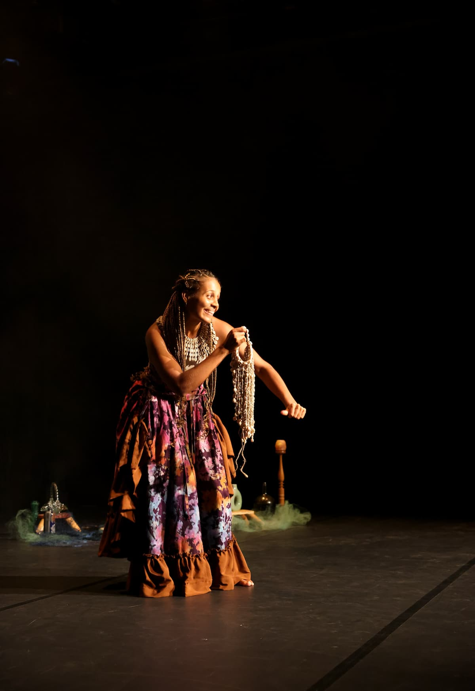
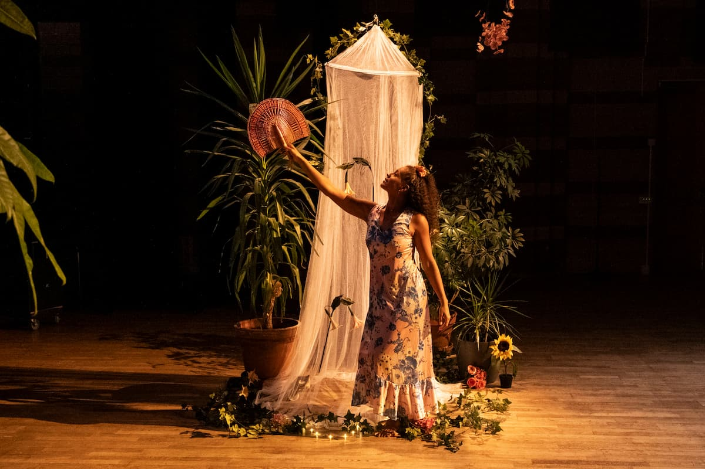

Lisää teoksen kuvaVeden kuiskaus
Veden kuiskaus on vuorovaikutteinen tanssiesitys 3–8-vuotiaille lapsille sekä erityistä tukea tarvitseville lapsille yläkouluikään asti.
Teoksen inspiraationa on ollut vedentutkija M. Emoton kirja Veden salainen viesti. Kirjassa Emoto kuvailee, kuinka vesi hänen tutkimustensa mukaan muodosti kauniita jääkiteitä kuullessaan kauniita ja kannustavia sanoja, rukouksia tai musiikkia.
Teoksessa on vaikutteita ghanalaisesta tarinankerrontaperinteestä, jossa taikuus ja tanssi ovat tavallisia ilmaisun ja viestinnän keinoja.
Katso traileri- Koreografia ja esitys:
- Ama Kyei
- Lavastus, tekstiilityöt, dramaturginen avustus ja valokuvat:
- Wanda Holopainen
- Musiikki:
- Saban Ramadani, Sophia Mitiku, Christopher Ametornyo, Fadila Addy, Safianu Umar, Shushu Dafla, Emmanuel Avornyo, Micheal Akakpo, Barnbas Tengepare
- Puvustus:
- Koffi Maako
- Kaurikotilotaide:
- Emilia Kabalu
- Valokonsultointi:
- Titus Torniainen
- Rahoitus:
- Konstnärsnämnden (Ruotsi), Urpanapa. Wanda Holopaisen työskentelyä projektissa on rahoittanut Koneen Säätiö.

Lisää teoksen kuvaKukkatanssit
Kukkatanssit on vuorovaikutteinen esitys 3–7-vuotiaille lapsille. Kaikki kukat ovat menettäneet värinsä ja samalla supervoimansa. Onneksi Ama osaa kommunikoida Luontoäidin kanssa tanssin avulla. Luontoäidin opastuksella ja lasten avulla voimme auttaa kukkia saamaan värinsä ja supervoimansa takaisin.
Esitys on saatavilla ruotsiksi tai englanniksi. Sitä on esitetty yli 80 kertaa, muun muassa Kulttuurikeskus Stoassa, Annantalossa ja Kulttuurikeskus Caisassa Suomessa sekä Hallunda Folkets husissa, Edsbergin linnassa, Hågelbyn puistossa ja Kallhällin Folkets husissa Ruotsissa.
Katso traileri- Koreografi ja tanssija:
- Ama Kyei
- Luovat assistentit:
- Fredrika Burvall, Love Andersson, Marika Peura, Mona Namer, Selma Flikerte, Kirsi Hemanus, Rebecca Livaniou
- Rahoittaja:
- Konstnärsnämnden, Region Stockholm
Walk with me
Walk with Me on koko perheen esitys. Vilttimajan sisällä kuljemme vaihtuvien unimaisemien ja lempeiden seikkailujen halki. Esitys kutsuu meidät kokoontumaan yhdeksi laumaksi, saman äidin lapsiksi, ja luottamaan elämään, liikkeeseen ja toisiimme lapsen uteliaisuudella.
Teos sai ensi-iltansa Kiasma-teatterissa kesäkuussa 2026.
Katso traileri- Ohjaus, koreografia, esitys, käsikirjoitus:
- Ama Kyei
- Lavastus, videot, taiteellinen dialogi, käsikirjoitus:
- Wanda Holopainen
- Äänisuunnittelu, taiteellinen dialogi:
- Saban Ramadani
- 2D-animaatio, taiteellinen dialogi:
- Naomi Holopainen
- Valosuunnittelu, taiteellinen dialogi:
- Titus Torniainen
- Puvut:
- Albert Kingsley Annan & Angela Emanuel Mugisha
- Neulotut taideteokset lavasteissa:
- Kirsi-Mari Hemanus
- Tanssi videolla:
- Steeze Afrika (Accra, Ghana)
- Kpanlogo-laulu:
- Ghana Dance Ensemble muusikot (Accra, Ghana)
- Laulu:
- Iida Valme
- Ulkopuoliset silmät:
- Marika Peura, Nadja Leham & Axelle Munezero
- Yhteistuotanto:
- URB-festivaali / Kiasma-teatteri ja taiteilijat